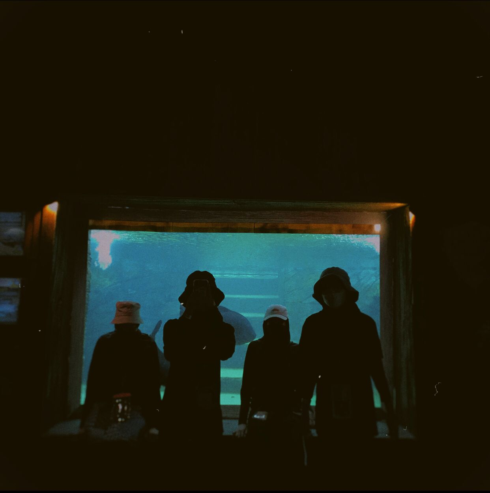

The Lost World of Tambun, with its many worlds crammed into one, is an action-packed, exhilarating journey in Ipoh, Malaysia, with the most thrilling... rides and attractions.A theme park established in the natural sceneries of Ipoh, surrounded by breathtakingly breath-taking limestone characteristics, is located in the ancient town of Ipoh, in the centre of the North-South corridor in Perak.
V-Log
Short video in Lostworld of Tambun


On the 2nd of December 2021, the lockdown order was lifted. On Lostworld, the five of us had arranged a reunion. And thankfully everything has run smoothly.
The last time I went to Lostword was 10 years old and after few years, I realised lostworld has a lot of progress in new areas that I discovered: